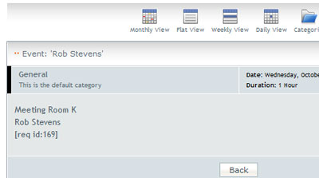
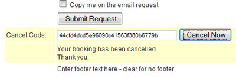

This screen is used to configure the component to your particular needs.
Save: Save changes.
Help: Opens this help screen.
Send email notifications TO: When a new booking request is created by the front-end screen, a notification is emailed to the address specified here. Note this can be overridden at the resource level, so different resources can send notifications to different addresses.
Email notification FROM address: Any emails sent from the component must have a FROM address. This should be the same domain as you web site. Example: if your web site is abc.com, the FROM must be somebody@abc.com or else you mail server may reject the outgoing mail as 'relayed' or spam.
Email notification SUBJECT: This will be the subject used in email notifications
HTML email: Yes = send HTML formatted email, No = send plain text emails.
Phone: Make the phone number a required input field / optional input field or hide it.
Email: Make the email address a required input field / optional input field or hide it.
Hide logo: Hide the ResourceBookingPro.com link on the front-end screen.
Use DIV Calendar: Yes = use CSS div calendar, No = use popup window calendar, for date picker.
Date Picker Start Day: Date picker can be set to start on Sunday or Monday.
Limit User`s Daily Bookings: You can limit the maximum number of bookings a user can make. Only applies to logged in users so only usable with Login Required = Yes.
0 = NO LIMIT
Auto-Accept Bookings: Normally a booking 'request' is created, with the status of 'new', and notification is send to the address specified above. A designated administrator would make the decision to accept or decline the booking request. With Auto-Accept = Yes, the 'new' status is skipped and the booking as added with the status of accepted. This should be used with caution when running the control in Start/End mode as a malicious user could book from Dec 1 to Jan 31 and thereby lock up a resource until an administrator went in and canceled the booking.
Allow Cancellation: If set to 'Yes', a system generated, unique, code is created and added to the booking. You can add this code to the confirmation sent to the user via tokens (see Tokens on the Messages tab). With Allow Cancellation = Yes, a section will be shown, at the bottom of the booking screen, where the user can enter their cancellation code and have their booking canceled. This does not remove the booking, it just changes the status to 'cancelled' It will remove the booking from the calendar if one is in use.
up to x hours..: You can set a minimum time, before the booking, that cancellation will be accepted. For example, if you set it to 24 hours and the customer attempts to cancel 4 hours before, they will get a message saying cancellations are only allowed up to x hours before the booking starts. See Messages tab for setting the exact wording you want.
Time Format: You can specify the time format to be used on the front-end screen, either 24 hour or 12 hour +AM/PM. All internal times and administrator screens are in 24 hour format.
Header Text: Enter any information text that you would like to be displayed above the input fields of the booking screen.
Footer Text: Enter any information text that you would like to be displayed above the input fields of the booking screen.
Resource Booking Pro can be set to work with either of two 3rd party calendars, JCalPro or EventList.
There is no direct connection between RBPro and the calendars, RBPro just adds/removes data from the calendar's tables. This means the communication is one-way, RBPro knows about the calendar but the calendar has no knowledge of RBPro. You cannot initiate a booking from the 3rd party calendar and have it talk to RBPro.
When a calendar is chosen, a section dealing with the calendar will appear in the booking details screen.
None: do not use a 3rd party calendar
Various 3rd party calendars supported.
Calendar Fields: 3rd party calendars have a 'title' and 'body' area. The title is what appears in the calendar cell, the body is what appears when you open a calendar date for details on the event. You can tell RBPro which field to put in which area.
Event Title: Choose either resource.name (name of the resource) or request.name (name of the requestor)
Event Body: This is what will be placed in the calendar body area. You can use tokens too insert booking information.
Daylight Savings Time: ABPro stores times in local time but some 3rd party calendars store in UTC (or GMT) and ABPro needs to convert local to UTC by using the Joomla time zone setting. Not everywhere in the world implements DST. This setting lets you tell ABPro if it should apply DST when converting to UTC.
These are the tokens available:
| Token | Will be replaced with | Token | Will be replaced with | |
| [resource] | name of the resource being booked | [resource_category] | the resource category | |
| [requester name] | the name of the requester | [resource_service] | the resource service | |
| [startdate] | start date of the booking | [phone] | the phone number of the requester | |
| [starttime] | start time of the booking | [email] | the email address of the requester | |
| [enddate] | end date of the booking | [cancellation_id]] | the system generated cancellation_id3 | |
| [endtime] | end time of the booking | [booking_total] | ||
| for UDFs | UDF example | |||
| [screen label] | the UDF label | [Favorite Fruit] | value entered by user for Favorite Fruit | |
Example:

These settings are used for the Graphic Availability Display booking screen only.
This display presents an alternate booking screen in which the user chooses a timeslot from a table of available slots.
Default Grid Start Time: The user can adjust the grid or table of timeslots to display an appropriate range of hours. This setting is the default when the screen opens.
Default Grid End Time: The user can adjust the grid or table of timeslots to display an appropriate range of hours. This setting is the default when the screen opens.
Hide Gird Start/Stop controls: Yes=Do not show the grid start/end dropdown lists on the GAD screen. The grid will be fixed at the values above.Â
Grid Start Day: Today = Grid will start with today's date,
Tomorrow = Grid will start with tomorrow's date, x days from now = Grid will start at x days from now.
Specific date = Grid will start at the selected date
Grid Width: This is the width of the timeslots grid. You may need to adjust this to work with your template. This must be a number of pixels, not a percentage, as the system must calculate a ratio of pixels to grid minutes for resizing grid. (default is 700)
Name Width: This is the with of the Y-Axis for the availability table. Either date or name. Again, it must be a number of pixels not a %. (default is 100)
Available Time Slot image: You can specify an image to be shown in the available timeslots. This is a path to image, example: "./administrator/images/tick.png"
Booked Time Slot image: You can specify an image to be shown in the booked or unavailable timeslots. This is a path to image, example: "./administrator/images/publish_x.png"
The colors for this screen are set in the css file and can be tailored to you site.
Number of days to show: When viewing by resource, this sets the number of days to show in the grid. Default is 7. More days = longer screen and slower response as more days need to be calculated and added to the grid.
Show Seats Available: Instead of a checkmark indicating a free timeslot, show the number of available seats.
Several important messages produced by the system are represented here for you to edit.
Booking Complete: This message is used when the booking is complete. You can use the tokens listed at the bottom of the screen in this message.
Example:

Booking In-Progress: This message tells the customer that their payment is still being processed. Note: NO TOKEN replacement here as PayPal does not return the request id until it is completed.
Too late to Cancel: This is the message displayed if you have set a minimum amount of time before a booking that a cancellation is accepted, and the user tries to cancel too close to the booking time. You will probably want to tailor it you your settings, ex: Online cancellation is only allowed up to 24 hours before your booking, Please call our office.
Cancellation: This is the confirmation message for user initiated cancellation. It appears on the booking screen so best to keep it short and sweet ;-)

Reminder: This message can be sent by Admin to remind a person about their booking.
These are the tokens available:
| Token | Will be replaced with | Token | Will be replaced with | |
| [resource] | name of the resource being booked | [resource_category] | the resource category | |
| [requester name] | the name of the requester | [resource_service] | the resource service | |
| [startdate] | start date of the booking | [phone] | the phone number of the requester | |
| [starttime] | start time of the booking | [email] | the email address of the requester | |
| [enddate] | end date of the booking | [cancellation_id]] | the system generated cancellation_id3 | |
| [endtime] | end time of the booking | [booking_total] | ||
| for UDFs | UDF example | |||
| [screen label] | the UDF label | [Favorite Fruit] | value entered by user for Favorite Fruit | |
Appointment Booking Pro 1.4 can be set to:
With PayPal enabled, the booking screen will show the calculated cost at hours x rate, or flat rate depending on how you set it up.
The other main difference when enabling PayPal, is that a new request will get inserted with a status of 'pending' rather than 'new'. The user is sent to PayPal to make their payment. They are sent back to your site. In a separate thread, PayPal processes the payment and sends an IPN (Instant Payment Notification) message to your site. This IPN is really not 'instant' and your customer may have been returned to your site before the IPN arrives. In this case the in-progress message is shown to the customer. When PayPal completes the payment processing, they send the customer an email and send your site an IPN message. When the customer comes back to your site, the return page checks to see if the transaction has completed. If it has it displays the confirmation message, if not it displays the in-progress message. These messages are set in the 'Messages' tab.
There is a possibility that the customer may abandon the booking after being sent to PayPal. In this case the booking will stay in 'pending' and need to be cleared manually. If the customer elects to 'Cancel' the payment in PayPal, the IPN will reflect that and ABPro will set the request from 'pending' to 'canceled'.
The relation between ABPro's 'Auto-Accept' and 'PayPal Enabled' is show below.
PayPal = No (no PayPal submit button)
Auto-Accept = Yes
New booking status = 'Accepted' (timeslot locked)
Auto-Accept = No
New booking status = 'New' (timeslot not locked)
PayPal = Yes (ONLY PayPal submit button shown)
Auto-Accept = Yes
New booking status = 'Pending' -> goes to 'Accepted' on IPN ok (Pending locks appointment)
Auto-Accept = No
New booking status = 'New'
Accept on Payment = Yes -> goes to 'Accepted' on IPN ok
PayPal = Optional (both submit buttons shown)
non-PayPal Submit
Auto-Accept = Yes
New booking status = 'Accepted'
Auto-Accept = No
New booking status = 'New'PayPal Submit
Auto-Accept = Yes
New booking status = 'Pending' -> goes to 'Accepted' on IPN ok (Pending locks appointment)Auto-Accept = No
New booking status = 'New'
Accept on Payment = Yes -> goes to 'Accepted' on IPN ok
Important!!
When a booking is made with status 'Pending', the timeslot is locked just as if it were accepted. The display GAD display will show a dashed border so you can see what timeslots are 'Pending'. Normally a slot should only be 'Pending' for a few minute (seconds?) while PayPal is processing the payment. If the user aborts out of PayPal without paying, the slot will stay 'Pending' (and locked) until admin deletes it.
Enable PayPal: Enable ABPro to use PayPal - see above.
'Accept' booking when Paid: If the IPN message coming back from PayPal indicates payment complete, the request status skips the 'new' state and goes to 'accepted'
Additional Fee: You can optionally add an additional fee to the PayPal transaction. This can be either a fixed fee or percentage for the total. An example may be a processing fee you wish to charge.
Enable Coupons: Set to yes if you wish to enable the coupon system and show a coupon entry box on the booking screens.
PayPal button image URL: This is the location used to fetch the PayPal button image. For other images, use PayPal to 'create a buy now button' then cut&paste the button URL.
Currency Code: What currency you wish to charge in.
PayPal Account: Enter your PayPal business account, normally your email address.
PayPal Sandbox URL: Use of the PayPal sandbox for testing is recommended but not mandatory. How to use the sandbox is beyond the scope of this help file.
PayPal Production URL: This is the URL to access PayPal, it was made editable as it may change for non-North American PayPal accounts(?).
Use PayPal Sandbox: If set to 'Yes', the buy-now button will be send you to the PayPal sandbox URL rather than the production URL.
IPN Page for PayPal: To use PayPal you will need to enable IPN (Instant Payment Notification) in your PayPal account. This field will display the IPN return URL that you will need to enter into you PayPal profile.
Your Logo image: If you want the PayPal payment screen to display your logo, enter a full url here <br>(ex: http://mysite.com/mylogo.png)
Item Name: You can modify the item name, this is what PayPal shows as the thing being purchased.
Optional Fields (0-3): You can specify additional information to be show on the PayPal screen. See User's Guide 'PayPal Optional Fields Example' for example of setup and use.